Nearest-neighbor search
Lviv University
ANN
LSH
Locality sensitive hashing (LSH) is a widely popular technique used in approximate nearest neighbor (ANN) search.
LSH is one of the original techniques for producing high quality search, while maintaining lightning fast search speeds.
ANN Users
- Google (query-vs-index)
- Amazon (product recommendations)
- Spotify (music recommendations)
- Netflix (movie recommendations)
Spotify example
Tip
Spotify uses Voyager.
- modified version of open-source hnswlib
Guide to electronic music
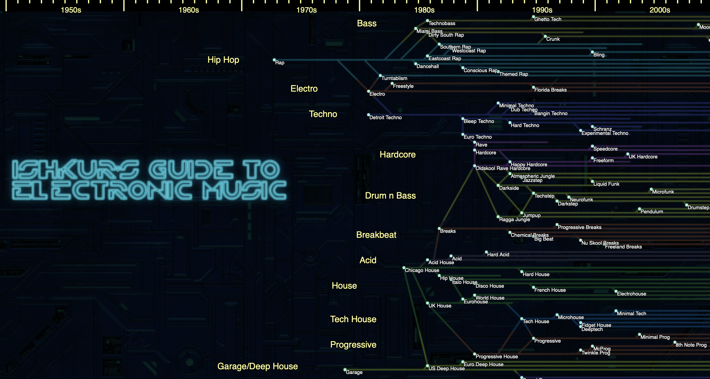
Guide to electronic music
Search complexity
Pairwise comparison
Complexity is \(O(n^2)\). If a single query against all samples - \(O(n)\).
Plus, we compare vectors - sometimes highly-dimensional ones.
Approximate search
Problem
Is it even possible to perform a search with sub-linear complexity?
Solution
The solution is approximate search.
Rather than comparing every vector (exhaustive search) — we can approximate and limit our search scope to only the most relevant vectors.
Locality Sensitive Hashing
Vector comparison complexity
Attempting to find a closest match is linear \(O(n)\).
Pairwise comparison - at best log-linear \(O(n \log n)\).
Considerations
- we need to reduce the number of comparisons
- we want only to compare vectors that we believe to be potential matches — or candidate pairs
Locality Sensitive Hashing
LSH
- several approaches
- we’ll consider traditional one first: shingling + MinHashing + banded function
Locality Sensitive Hashing
Basic outline
- segment and hash same sample several times
- when we find that a pair of vectors has been hashed to the same value at least once, we tag them as candidate pairs — that is, potential matches.
Python dictionaries
- We have a key-value pair which we feed into the dictionary.
- The key is processed through the dictionary hash function and mapped to a specific bucket.
- We then connect the respective value to this bucket.
Locality Sensitive Hashing
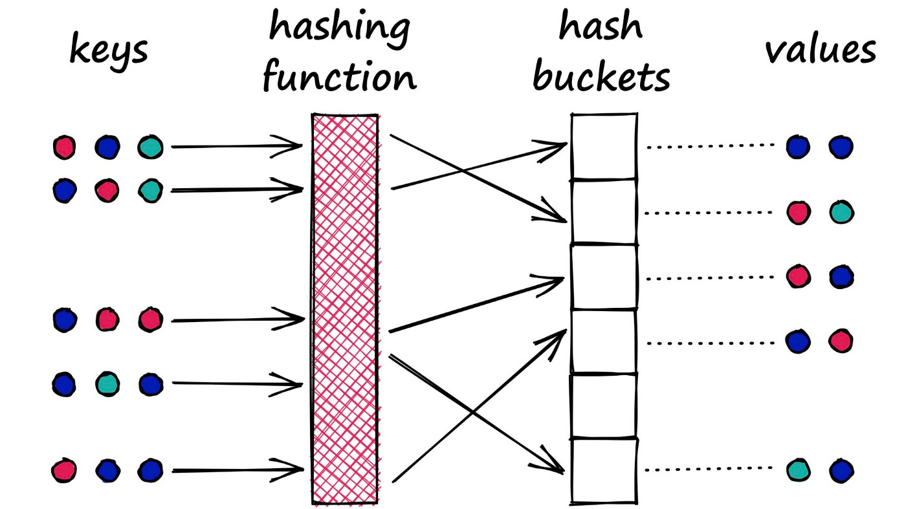A typical hash function aims to place different values (no matter how similar) into separate buckets.
Locality Sensitive Hashing
Hash properties
- determinism
- uniformity
- non-reversibility
- fixed-size output
- sensitivity to input changes
- collision resistance
Locality Sensitive Hashing
Difference in goals
- Dictionaries: minimize collisions.
- LSH: maximize collisions (ideally only for similar inputs)
Locality Sensitive Hashing
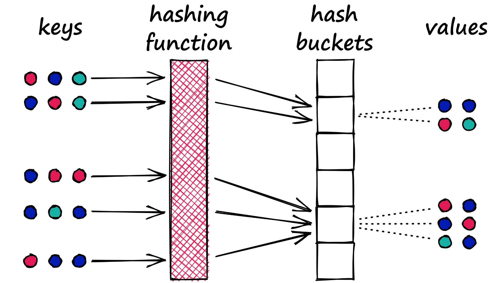
Shingling, MinHashing, and LSH
LSH Steps
- convert text to sparse vectors using k-shingling (and one-hot encoding)
- use minhashing to create
signatures - pass signatures onto LSH process to weed out candidate pairs
Shingling, MinHashing, and LSH
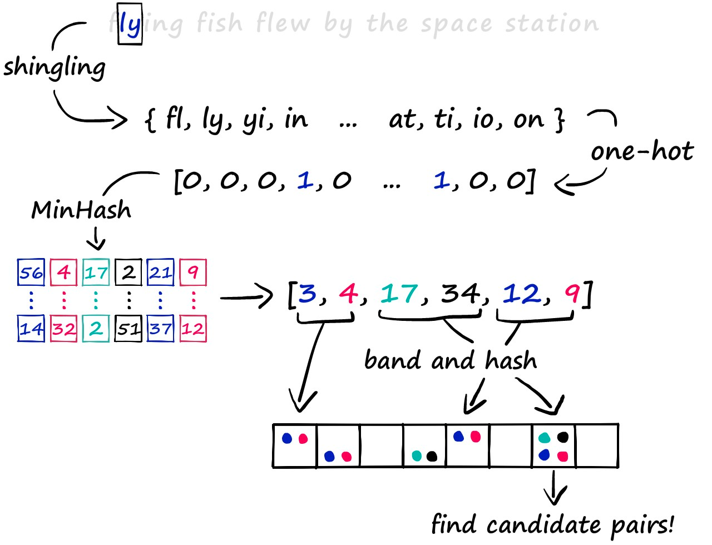k-Shingling
Definition
k-Shingling, or simply shingling, is the process of converting a string of text into a set of shingles. The process is similar to moving a window of length \(k\) down our string of text and taking a picture at each step. We collate all of those pictures to create our set of shingles.
k-Shingling
Note
Shingling removes duplicate items!
k-Shingling
Sparse vectors
Next, create sparse vectors. To do this, we first need to union all of our sets to create one big set containing all of the shingles across all of our sets — we call this the vocabulary (or vocab).
k-Shingling
Sparse vectors
We use this vocab to create our sparse vector representations of each set - a one-hot encoding.
All we do is create an empty vector full of zeros and the same length as our vocab — then, we look at which shingles appear in our set.
Minhashing
Minhashing
Minhashing is the next step in our process, allowing us to convert our sparse vectors into dense vectors.
Minhash functions:
- randomly generate for every position in the signature (e.g. the dense vector)
- for a dense vector/signature of 20 numbers — we would use 20 minhash functions.
- MinHash functions are a randomized order of numbers — and we count from 1 to the final number (which is
len(vocab))
Minhashing
Our signature values are created by first taking a randomly permuted count vector (from 1 to len(vocab)+1) and finding the minimum number that aligns with a 1 in our sparse vector.
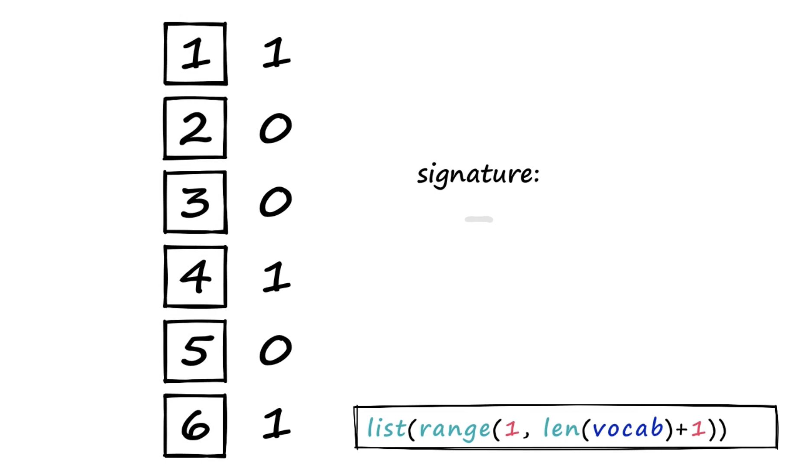
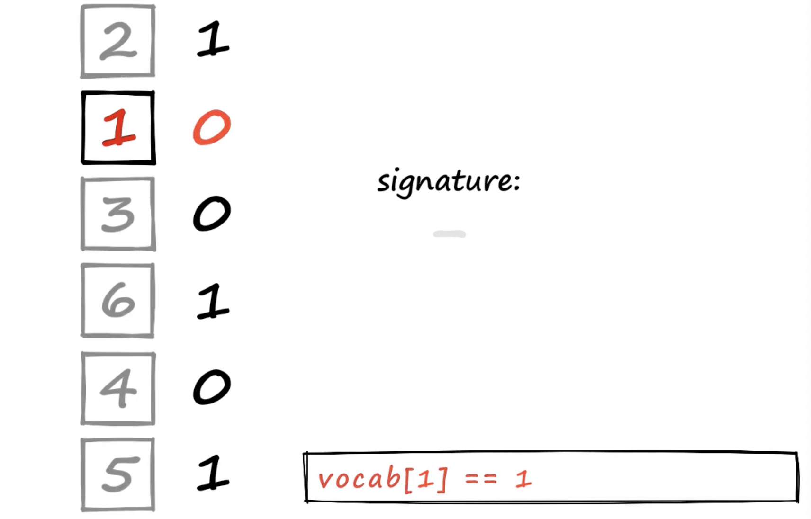
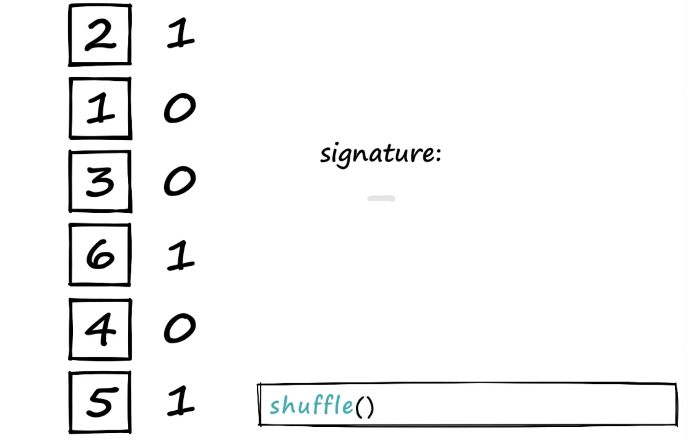
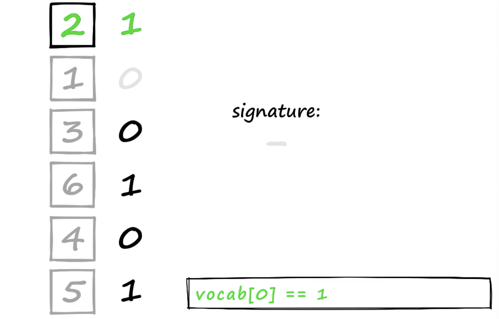
Minhashing
Process
- Above, we’re using a smaller vocab containing six values so we can easily visualize the process.
- We look at our sparse vector and say, “did this shingle at vocab[1] exist in our set?”. If it did — the sparse vector value will be 1 — in this case, it did not exist (hence the 0 value). So, we move to number 2, identify its position (0) and ask the same question. This time, the answer is yes, and so our minhash output is 2.
- That’s how we produce one value in our minhash signature. But we need to produce 20 (or more) of these values. So, we assign a different minhash function to each signature position — and repeat the process.
Minhashing
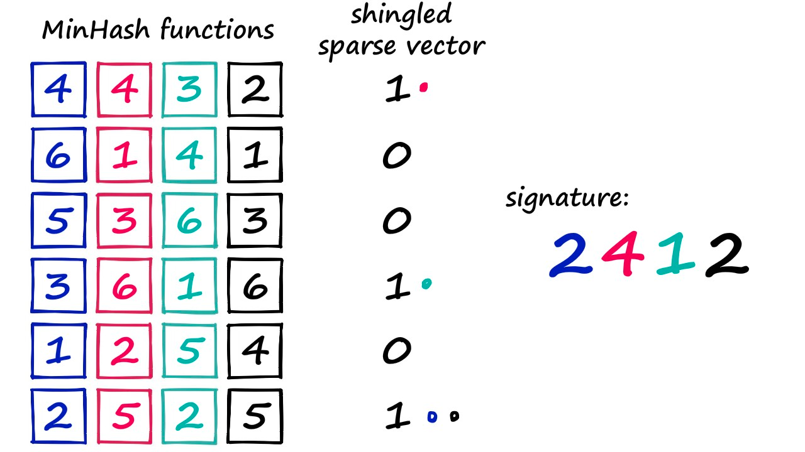Here we use four minhash functions/vectors to create a four-digit signature vector. If you count (from one) in each minhash function, and identify the first value that aligns with a one in the sparse vector — you will get 2412.
Minhashing in Python
We have three steps:
1. Generate a randomized MinHash vector.
Minhashing in Python
2. Loop through this randomized MinHash vector (starting at 1).
Minhashing in Python
2. Loop through this randomized MinHash vector (starting at 1).
Count
Count up from 1 to len(vocab) + 1 and find if hash_ex.index(i) position in our one-hot encoded vectors contains 1 in that position:
Minhashing in Python
3. Build a signature from multiple iterations of 1 and 2.
Minhash vectors
def create_hash_func(size: int):
# function for creating the hash vector/function
hash_ex = list(range(1, len(vocab)+1))
shuffle(hash_ex)
return hash_ex
def build_minhash_func(vocab_size: int, nbits: int):
# function for building multiple minhash vectors
hashes = []
for _ in range(nbits):
hashes.append(create_hash_func(vocab_size))
return hashes
# we create 20 minhash vectors
minhash_func = build_minhash_func(len(vocab), 20)Minhashing in Python
Minhashing in Python
Signatures creation
Minhashing
Outcome
We’ve taken a sparse vector and compressed it into a more densely packed, 20-number signature.
Information Transfer from Sparse to Signature
Question
Is the information truly maintained between our much larger sparse vector and much smaller dense vector?
Answer
We use Jaccard similarity to calculate the similarity between our sentences in shingle format — then repeat for the same vectors in signature format.
Information Transfer from Sparse to Signature
Jaccard fn
Band and Hash
Banding approach to LSH
The final step in identifying similar sentences is the LSH function itself.
- signatures
- hashing segments of each signature
- looking for hash collisions
Band and Hash
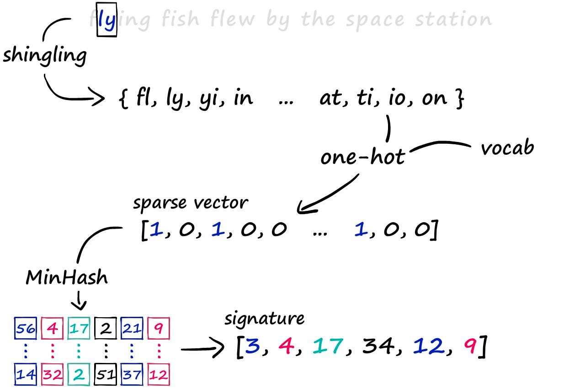A high-level view of the signature-building process. We take our text, build a shingle set, one-hot encode it using our vocab, and process it through our minhashing process.
Band and Hash
Problem
Now, if we were to hash each of these vectors as a whole, we may struggle to build a hashing function that accurately identifies similarity between them — we don’t require that the full vector is equal, only that parts of it are similar.
In most cases, even though parts of two vectors may match perfectly — if the remainder of the vectors are not equal, the hashing function will likely put them into separate buckets.
Solution
We want signatures that share even some similarity to be hashed into the same bucket, thus being identified as candidate pairs.
Band and Hash
How it Works
- The banding method solves this problem by splitting our vectors into sub-parts called bands \(b\)
- rather than processing the full vector through our hash function, we pass each band of our vector through a hash function
Imagine we split a 100-dimensionality vector into 20 bands. That gives us 20 opportunities to identify matching sub-vectors between our vectors.
Band and Hash
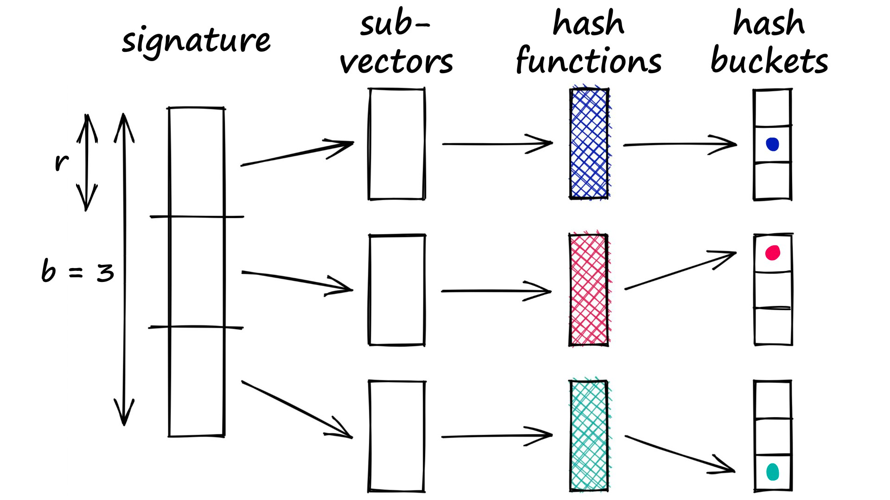We split our signature into b sub-vectors, each is processed through a hash function (we can use a single hash function, or b hash functions) and mapped to a hash bucket.
Band and Hash
Banding
- If there is a collision between any two sub-vectors, we consider the respective full vectors as candidate pairs.
- We split the signatures into subvectors. Each equivalent subvector across all signatures must be processed through the same hash function. However, it is not necessary to use different hash functions for each subvector (we can use just one hash function for them all).
Band and Hash
Problem
- Only part of the two vectors must match for us to consider them.
- This increases the number of false positives (samples that we mark as candidate matches where they are not similar).
- However, we try to minimize these as far as possible.
Band and Hash in Python
Band and Hash in Python
Band and Hash in Python
Looping
Then we loop through the lists to identify any matches between sub-vectors. If we find any matches — we take those vectors as candidate pairs.
for b_rows, c_rows in zip(band_b, band_c):
if b_rows == c_rows:
print(f"Candidate pair: {b_rows} == {c_rows}")
# we only need one band to match
break
Out: Candidate pair: [69, 55] == [69, 55]We find that our two more similar sentences, b, and c are identified as candidate pairs.
The less similar of the trio, a — is not identified as a candidate. This is a good result, but if we want to really test LSH, we will need to work with more data.
Other kinds of ANN
Tradeoffs
Tradeoffs
- speed
- memory
- quality
Flat search
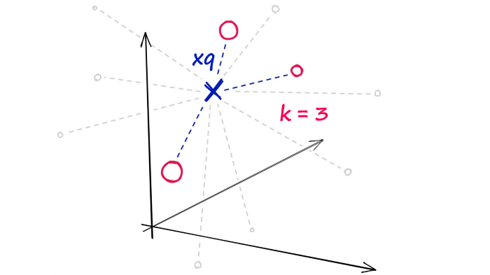With flat indexes, we compare our search query \(\boldsymbol{xq}\) to every other vector in the index.
Flat search
When?
- Search quality is a very high priority.
- Search time does not matter OR when using a small index (<10K).
Flat search
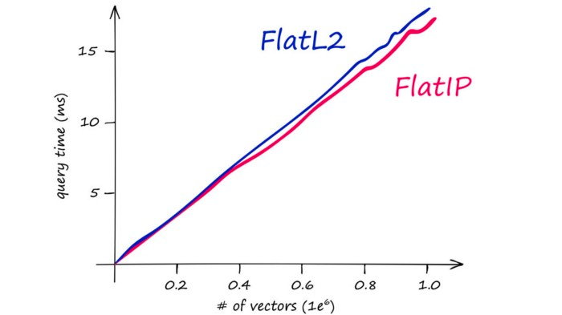Euclidean (L2) and Inner Product (IP) flat index search times using faiss-cpu on an M1 chip. Both using vector dimensionality of 100.
Flat search
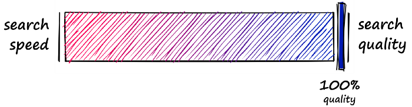Speed improvements
How can we search faster?
- Reduce vector size - through dimensionality reduction or reducing the number of bits representing our vectors values.
- Reduce search scope - we can do this by clustering or organizing vectors into tree structures based on certain attributes, similarity, or distance - and restricting our search to closest clusters or filter through most similar branches.
Speed improvements

Using either of these approaches means that we are no longer performing an exhaustive nearest-neighbors search but an approximate nearest-neighbors (ANN) search — as we no longer search the entire, full-resolution dataset.
LSH speed
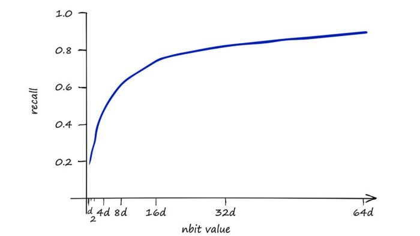$nbits $ resolution of the hashed vectors. A higher value means greater accuracy at the cost of more memory and slower search speeds.
LSH speed
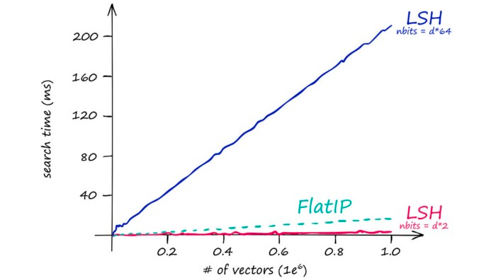So our stored vectors become increasingly larger as our original vector dimensionality d increases. This quickly leads to excessive search times.
LSH speed
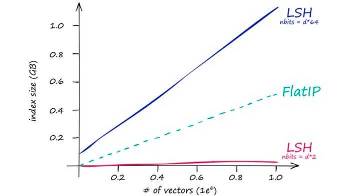Which is mirrored by our index memory size:
LSH speed
When?
- low-dimensionality vectors (128 is already a bit too large)
- small indexes
HNSW
Hierarchical Navigable Small World Graphs
- great search quality
- good search speed
- big index sizes
Facebook example
With 1.59B active users, the average number of steps (or hops) needed to traverse the graph from one user to another was just 3.57.
HNSW
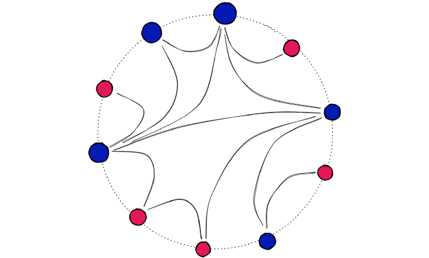Visualization of an NSW graph. Notice that each point is no more than four hops away from another.
HNSW
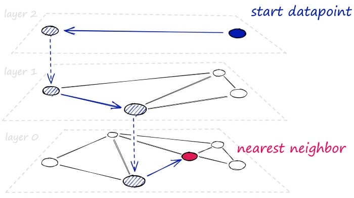HNSW graphs are built by taking NSW graphs and breaking them apart into multiple layers. With each incremental layer eliminating intermediate connections between vertices. With HNSW, we break networks into several layers, which are traversed during the search.